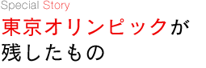

東京オリンピックは、大成功のうちに終了した。
しかし、オリンピック開催の真の意義は、大会後にどのようなものを残すことができるかにあるのだ。
東京オリンピックは日本のスポーツ界に有史以来の大きなインパクトを与えました。まず、金メダル16個を含む計29個のメダルを獲得し、国際競技力のレベルで、いくつもの競技が「世界に追いつけ、追い越せ」を実現し、あるいは実現可能な手応えをつかみました。
1970年代初頭に世界的になったスポーツ・フォア・オール（国民皆スポーツ参加）運動の「日本版」は、東京オリンピックの開催をきっかけとして生まれたのです。歴史に「…たら」「…れば」は禁物といわれますが、もし、あの時期に東京オリンピックがなかったら、わが国のオリンピック・スポーツの発展は今日と同じではなかっただろうと思います。